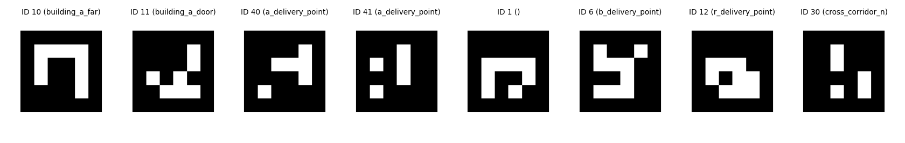
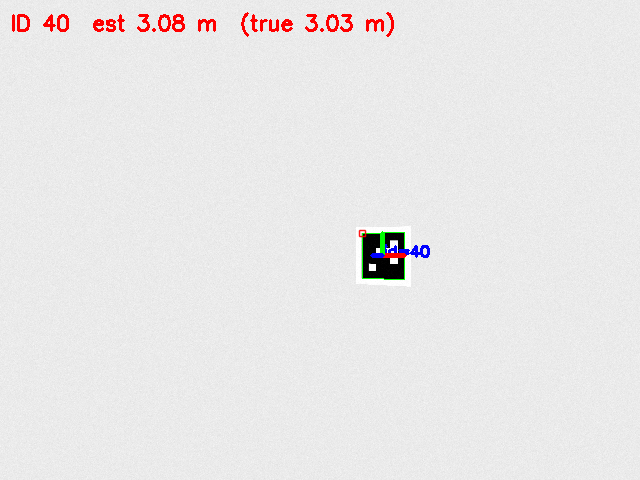
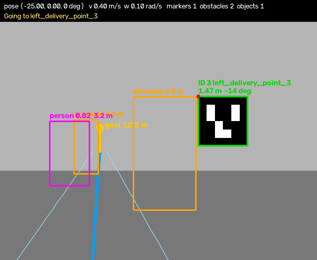
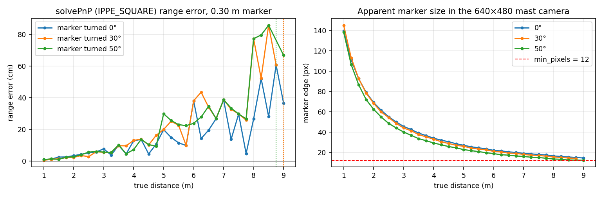
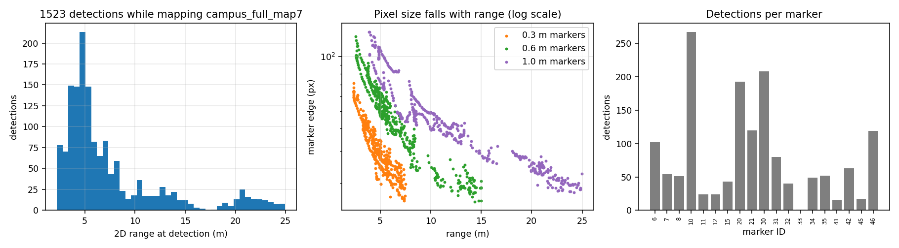
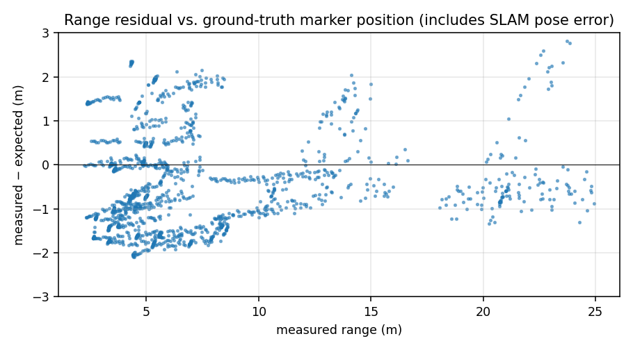

The robot recognises places with square fiducial markers from the OpenCV ArUco DICT_4X4_50 dictionary (4×4 bits, 50 IDs). Each marker has a known ID, size and purpose, so a detection gives three things at once: which landmark is in view (no data-association problem), where it is relative to the robot (range and bearing from the camera pose), and which way it faces (used to place the delivery point in front of it). The markers are used by every part of the stack: the EKF-SLAM mapper adds them as landmarks, the delivery navigator uses them as beacons for localisation, and at every stop the robot turns to the marker and checks that the camera sees the correct ID before it reports Delivered.
| Kind | Size (black square) | Count | Where |
|---|---|---|---|
| delivery | 0.30 m | 22 | Behind every delivery pad / on tables (room A, room B, corridor rooms), 0.4–0.6 m high |
| room | 1.00 m and 0.60 m | 2 + 2 | Far wall of each building (seen on entry) and inside the doorways |
| corridor | 0.60 m and 0.40 m | 4 + 2 | Corridor walls, so the robot sees a landmark in long corridors |

aruco_utils.generate_marker). Printable PNGs for the real robot are in models/aruco_marker_<id>/meshes/.The markers are seen by a dedicated mast camera (aruco_camera): RGB 640×480 at 15 Hz with a
horizontal field of view of 1.2 rad (69°), mounted above the cargo box at base_link +0.15 m in x and +0.55 m in z,
looking forward. Topics: /robot/aruco_camera/image_raw and /camera_info. Marker poses come from
config/aruco_markers.yaml (campus_area) and config/aruco_markers_two_buildings.yaml, both
generated together with the Gazebo models by the scripts in scripts/.
cv2.aruco (the ArucoDetector class on
OpenCV ≥ 4.7, detectMarkers on the Ubuntu 24.04 OpenCV 4.6; aruco_utils.MarkerDetector hides the
difference). Result: four corner points and the ID of each marker.min_pixels = 12 are dropped, and IDs that are not in
the marker config are ignored (known_markers_only), which removes misreads.cv2.solvePnP with SOLVEPNP_IPPE_SQUARE and the marker's real size gives the
rotation rvec and translation tvec in the camera optical frame.bx = 0.15 + t_z, by = −t_x), giving
range = √(bx²+by²) and bearing = atan2(by, bx). The marker normal (third column of the rotation matrix)
gives the facing angle. Detections farther than 25 × marker size, or whose facing is more than 80° away from
"towards the robot" (a pose flip of the planar PnP), are rejected.The standalone ROS node aruco_detector publishes an annotated image, a PoseArray, a JSON list of
detections and the current room; the mapper and navigator run the same code internally (ArucoObserver) so they
do not depend on that node.

drawFrameAxes).
robot_vision) in Gazebo: marker ID, name, range and bearing on the live camera, together with other detected objects.To measure the range error without the influence of SLAM, a 0.30 m marker was rendered with a perspective warp
through the exact mast-camera intrinsics (f = 320/tan(0.6) = 468 px, 640×480), with light image noise, at distances
from 1 to 9 m and turned 0°, 30° and 50° away from the camera. Each frame went through the same detection and
solvePnP(IPPE_SQUARE) code. (Synthetic frames, not Gazebo renders; script: reports/src/scripts/figs.py.)
| Distance | 0° (face-on) | 30° | 50° |
|---|---|---|---|
| 1 m | 1.0 cm / 140 px | 0.4 cm / 145 px | 0.9 cm / 138 px |
| 2 m | 3.3 cm / 69 px | 2.3 cm / 68 px | 2.6 cm / 62 px |
| 3 m | 7.6 cm / 46 px | 5.4 cm / 44 px | 5.6 cm / 40 px |
| 4 m | 12.8 cm / 34 px | 13.0 cm / 33 px | 7.2 cm / 29 px |
| 5 m | 19.8 cm / 27 px | 19.9 cm / 26 px | 29.8 cm / 23 px |
| 6 m | 37.9 cm / 22 px | 38.0 cm / 21 px | 23.7 cm / 19 px |
| 8 m | 26.5 cm / 16 px | 77.2 cm / 16 px | 77.2 cm / 14 px |
| 9 m | 36.4 cm / 14 px | – | 66.7 cm / 12 px |

Two results matter for the rest of the system. First, a 0.30 m delivery marker is accurate to a few centimetres within 3 m, which is exactly where the robot stands when it confirms a delivery (2.3 m stand-off). Second, beyond ~5 m the error reaches decimetres; this is why the EKF noise is scaled by range/pixels, and why large 0.6 m and 1.0 m markers are placed where the robot must localise from far away (room far walls, corridors).
The mapper logs every accepted detection to observations.csv. For the final map campus_full_map7
(two_buildings world) there are 1523 detections of 19 different markers. The median range
is 5.5 m and the longest 25.0 m (a 1.0 m room marker).


When the navigator reaches a delivery point it turns to the stored facing of that point's marker and looks for the expected ID (or any marker of that table) for up to 2 s. The log line then says marker N confirmed at d m, or carries a WARNING marker N not in view; after the dwell time the order is reported Delivered. If the point cannot be reached, the navigator recovers its pose from markers and lidar, tries once more, and otherwise reports Failed. A stricter mode that refuses to deliver without the marker would be a one-line change. In the offline replica the robot stopped 0.08–0.16 m from the real floor pads with the right marker confirmed at every stop.
models/aruco_marker_<id>/meshes/aruco_<id>.png and measure the black square;
put the measured size into the marker YAML – range scales directly with it.camera_info), set camera_offset to its true mount position, and keep
the 0.30 m markers at the same height as in the simulation.dev/aruco_playground.py tool lets you tune
DetectorParameters (adaptive threshold windows, corner refinement) on recorded frames.